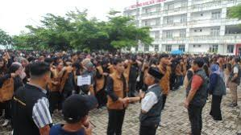

KKN ITERA Hadirkan Inovasi di Masyarakat Lampung
Mahasiswa KKN ITERA menghadirkan inovasi di Masyarakat Lampung. Institut Teknologi Sumatera (ITERA) kembali menggelar Kuliah Kerja Nyata (KKN) dengan mengirimkan 3.563 mahasiswa ke 364 desa di Provinsi Lampung. Program ini bertujuan untuk mengaplikasikan ilmu pengetahuan dalam pemberdayaan masyarakat.
Selama KKN, mahasiswa menginisiasi berbagai inovasi, seperti pembuatan sabun cuci piring berbahan organik, pengolahan limbah kulit pisang menjadi selai, serta edukasi pangan bergizi untuk pencegahan stunting. Tak hanya itu, mereka juga membantu pengembangan UMKM dan memberikan edukasi sains bagi anak-anak sekolah dasar.
Rektor ITERA, Prof. Dr. I Nyoman Pugeg Aryantha, mengapresiasi program ini dan berharap inovasi mahasiswa dapat memberi dampak positif jangka panjang bagi masyarakat desa.
KKN ITERA Menetapkan Beberapa Mahasiswa di Beberapa Kabupaten Seperti:
- Tanggamus
- Lampung Selatan
- Lampung Timur
Itulah artikel mengenai KKN ITERA yang telah menghadirkan inovasi untuk masyarakat Lampung.